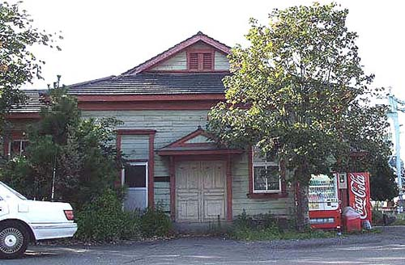
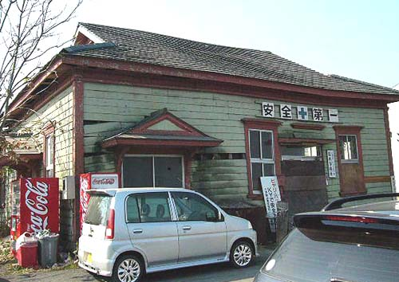

旧長崎税関三池支署
福岡県大牟田市新港町1-25
明治40年、三池港開港前年に長崎税関三池支署として開庁され、石炭貿易の中核行政機関と して活躍した。木造平屋建で、明治建築様式を現代に伝えている。現在は三井物流㈱が管理所有している。
なお、現在の長崎税関三池支署は、昭和40年完成した対岸の三池港湾合同庁舎に移転されている。

（2003年9月22日撮影）

（2006年11月10日高田さん撮影）
BACK